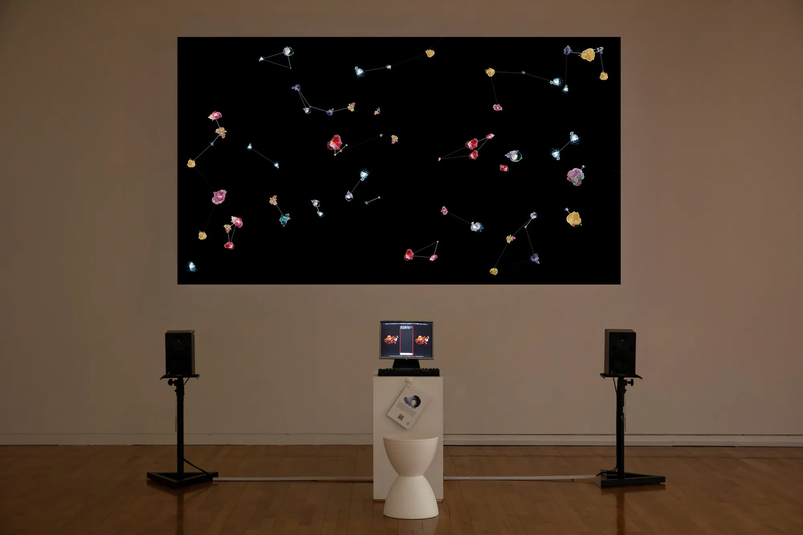
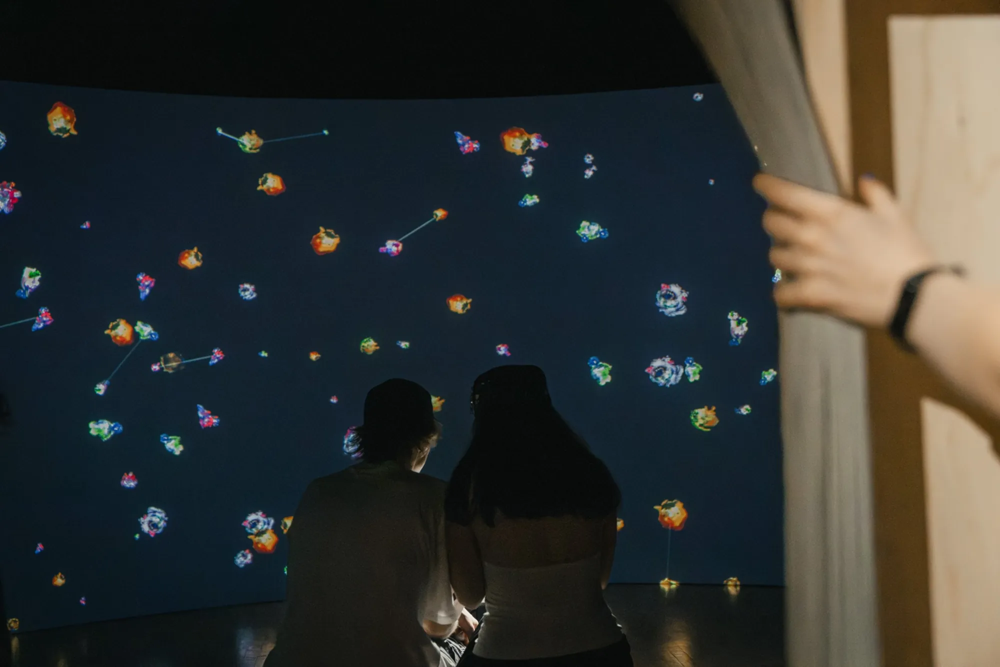
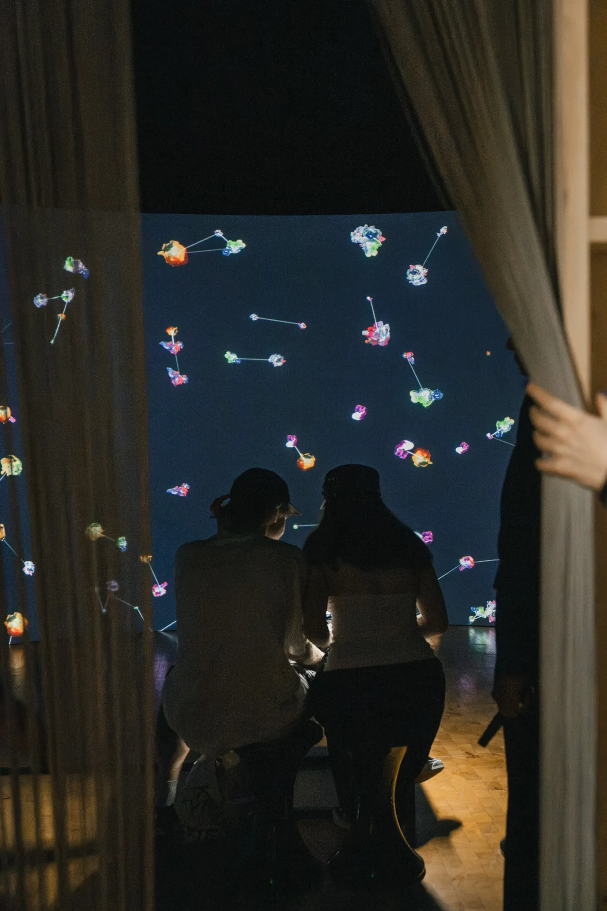

Transactions of Desire
Interactive installation, 2025
Shown at ISEA2025 under the title Transaction of Desires.
- Shown at
- “Silver Egg: The Eros of Media Art”, ZKM, Karlsruhe, 2026–2027
- ISEA2025 “Dong-Dong: Creator’s Universe”, Seoul Arts Center, Seoul, 2025.05
- Materials
- PC, monitor, projection, pedestal, live image generation and screening, interpretation card, 2-channel sound, variable dimensions
- In collaboration with
- Philip Liu (sound)

Transactions of Desire is an interactive installation that explores desire as a viral and mutating force. The work combines analog stamp-based painting with digital retranslation, creating hybrid images that shift between physical textures and machine logic.
In real time, audience input is processed through the YangYeong model, classifying it into 16 categories of desire using natural language processing. The results are instantly visualised as dynamic images and sounds, while a live YouTube API connection integrates streaming data, amplifying the collective ecosystem of desires.
The installation turns the exhibition space into a living field where personal impulses spread, transform, and collide with others.


